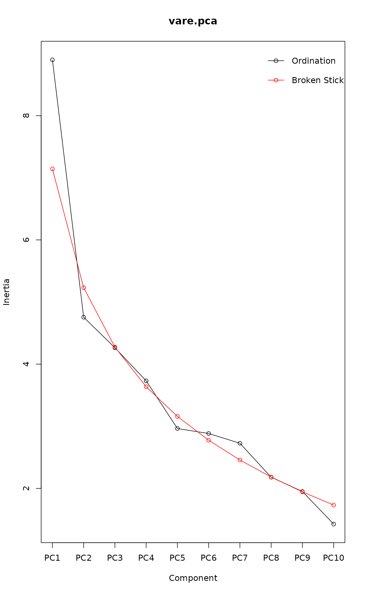

screeplot.cca.RdScreeplot methods for plotting variances of ordination axes/components
and overlaying broken stick distributions. Also, provides alternative
screeplot methods for princomp and prcomp.
# S3 method for cca
screeplot(x, bstick = FALSE, type = c("barplot", "lines"),
npcs = min(10, if (is.null(x$CCA) || x$CCA$rank == 0) x$CA$rank else x$CCA$rank),
ptype = "o", bst.col = "red", bst.lty = "solid",
xlab = "Component", ylab = "Inertia",
main = deparse(substitute(x)), legend = bstick,
...)
# S3 method for decorana
screeplot(x, bstick = FALSE, type = c("barplot", "lines"),
npcs = 4,
ptype = "o", bst.col = "red", bst.lty = "solid",
xlab = "Component", ylab = "Inertia",
main = deparse(substitute(x)),
...)
# S3 method for prcomp
screeplot(x, bstick = FALSE, type = c("barplot", "lines"),
npcs = min(10, length(x$sdev)),
ptype = "o", bst.col = "red", bst.lty = "solid",
xlab = "Component", ylab = "Inertia",
main = deparse(substitute(x)), legend = bstick,
...)
# S3 method for princomp
screeplot(x, bstick = FALSE, type = c("barplot", "lines"),
npcs = min(10, length(x$sdev)),
ptype = "o", bst.col = "red", bst.lty = "solid",
xlab = "Component", ylab = "Inertia",
main = deparse(substitute(x)), legend = bstick,
...)
bstick(n, ...)
# S3 method for default
bstick(n, tot.var = 1, ...)
# S3 method for cca
bstick(n, ...)
# S3 method for prcomp
bstick(n, ...)
# S3 method for princomp
bstick(n, ...)
# S3 method for decorana
bstick(n, ...)an object from which the component variances can be determined.
logical; should the broken stick distribution be drawn?
the number of components to be plotted.
the type of plot.
if type == "lines" or bstick = TRUE, a
character indicating the type of plotting used for the lines;
actually any of the types as in plot.default.
the colour and line type used to draw the broken stick distribution.
graphics parameters.
logical; draw a legend?
an object from which the variances can be extracted or the
number of variances (components) in the case of
bstick.default.
the total variance to be split.
arguments passed to other methods.
The functions provide screeplots for most ordination methods in
vegan and enhanced versions with broken stick for
prcomp and princomp.
Function bstick gives the brokenstick values which are ordered
random proportions, defined as \(p_i = (tot/n) \sum_{x=i}^n
(1/x)\) (Legendre & Legendre 2012), where
\(tot\) is the total and \(n\) is the number of brokenstick
components (cf. radfit). Broken stick has
been recommended as a stopping rule in principal component analysis
(Jackson 1993): principal components should be retained as long as
observed eigenvalues are higher than corresponding random broken stick
components.
The bstick function is generic. The default needs the number of
components and the total, and specific methods extract this
information from ordination results. There also is a bstick
method for cca. However, the broken stick model is not
strictly valid for correspondence analysis (CA), because eigenvalues
of CA are defined to be \(\leq 1\), whereas brokenstick
components have no such restrictions. The brokenstick components are not
available for decorana where the sum of eigenvalues
(total inertia) is unknown, and the eigenvalues of single axes are not
additive in detrended analysis.
Function screeplot draws a plot on the currently active device,
and returns invisibly the xy.coords of the points or
bars for the eigenvalues.
Function bstick returns a numeric vector of broken stick
components.
Jackson, D. A. (1993). Stopping rules in principal components analysis: a comparison of heuristical and statistical approaches. Ecology 74, 2204--2214.
Legendre, P. and Legendre, L. (2012) Numerical Ecology. 3rd English ed. Elsevier.
data(varespec)
vare.pca <- rda(varespec, scale = TRUE)
bstick(vare.pca)
#> PC1 PC2 PC3 PC4 PC5 PC6 PC7 PC8
#> 7.1438620 5.2308185 4.2742968 3.6366156 3.1583548 2.7757461 2.4569055 2.1836136
#> PC9 PC10 PC11 PC12 PC13 PC14 PC15 PC16
#> 1.9444831 1.7319228 1.5406184 1.3667054 1.2072851 1.0601279 0.9234819 0.7959457
#> PC17 PC18 PC19 PC20 PC21 PC22 PC23
#> 0.6763805 0.5638485 0.4575683 0.3568818 0.2612296 0.1701323 0.0831758
screeplot(vare.pca, bstick = TRUE, type = "lines")
